Tap a marker to go there. The town is small enough to cross in ten minutes and large enough to keep secrets for ninety-four people.
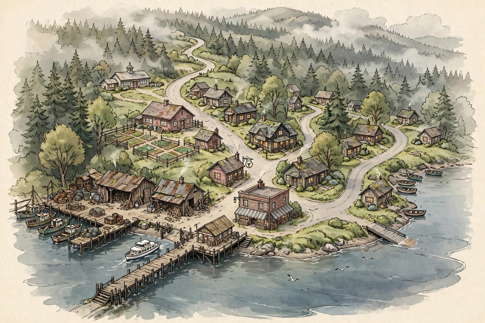
The Harbour Western Dock General Store Gull & Lantern Post Office Harbour Hall The Garden The School Lantern Road Eastern Ramp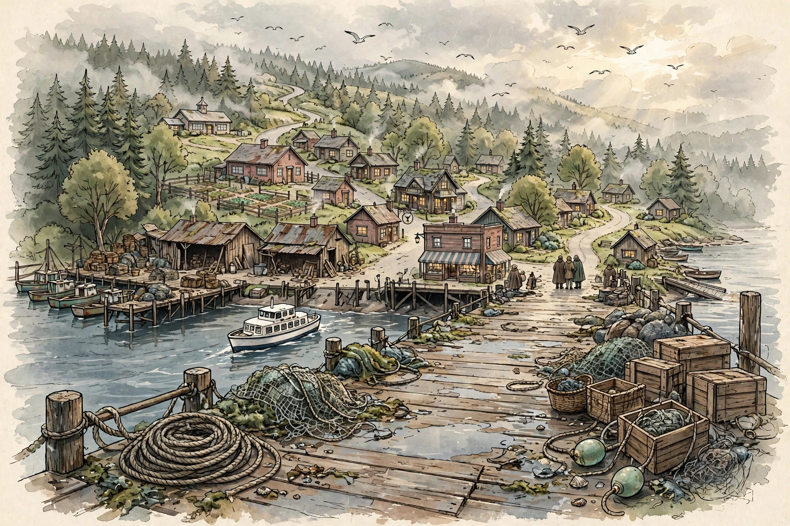
Where the M.V. June Bell lands and the town begins. Crates, nets, gulls, and somebody always waiting who swears they weren't.
You'll find: Mara Venn, when the ferry's in · Owen Shaw, photographing the light · whoever the ferry brings.
This is where you arrived. It is still the town's front door — everything and everyone comes through here.
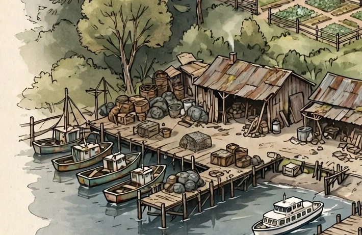
The old working dock — Arthur Pike's moorage, June Mercer's repair sheds, and a workshop June wants to buy outright. The dock itself is tired, and what to do about it is the town's loudest argument.
You'll find: Arthur Pike · June Mercer · the Second Chance, riding at her mooring.
Council hears the dock question on Tuesday. Arthur wants it open, Mara wants it closed, June wants its workshop — and nobody's position is the whole story.
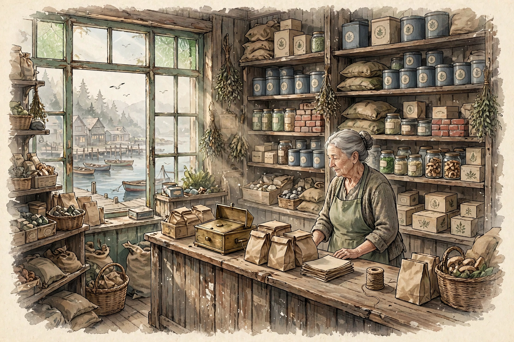
Elsie Bell's counter: groceries, tea, twine, and the town's memory, itemised. If it happened in Wrenhaven, something about it was once bought here.
You'll find: Elsie Bell, most hours the town is awake.
Your house key is here, when you're ready to collect it.
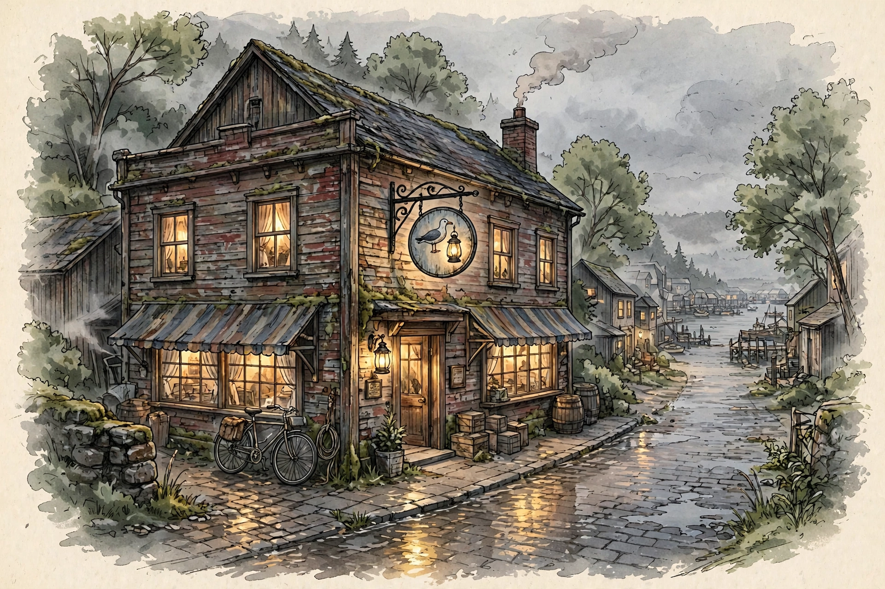
Daniel Venn's pub, under the sign of the gull and the lantern. Warm windows, generous credit, and an upstairs room that's been asleep for years, with a piano in it nobody can vouch for.
You'll find: Daniel Venn · half the town, by closing.
Thursday: the music-night planning meeting. The piano's condition is the town's smallest standing wager.
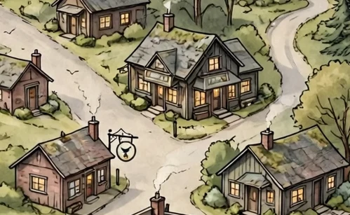
Ruth Calder's counter on the main street — stamps, parcels, and behind it, in labelled boxes, the paper memory of the town going back generations.
You'll find: Ruth Calder · the archive boxes · a volunteers' sign-up sheet with very few names on it.
Ruth is looking for help cataloguing the Harbour Hall archive. Some of the records, she says, don't reconcile.
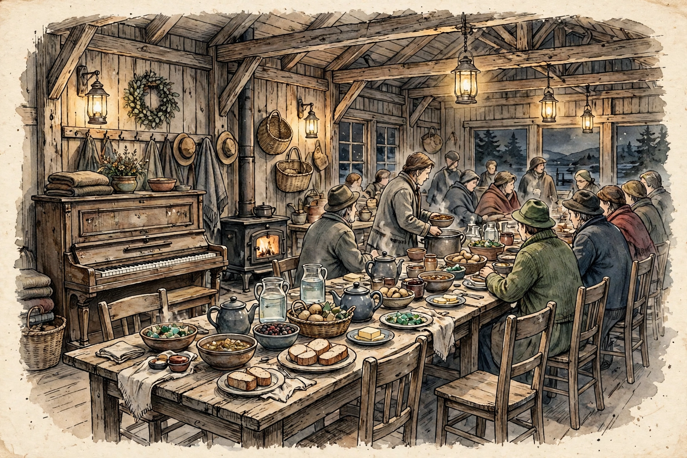
Suppers, meetings, weddings, arguments with minutes taken. Long tables, a wood stove, the old piano — and one plain wooden chair that nobody sits in, moved slightly away from the table, the way it has always been done. Ask anyone why and you'll get a different answer. Ask Elsie and you'll get a change of subject.
You'll find: everyone, Sundays at six · council, Tuesdays · the chair, always.
Sunday: community supper. Bring something to share.
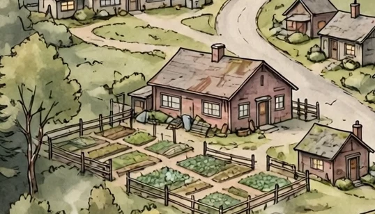
Agnes Vale's fenced kingdom behind the hall: bean beds under strict law, early planting underway, and the best family histories in town, with the dates only slightly wrong.
You'll find: Agnes Vale · Elsie, on Sundays, leaving by the same gate at the same time, as always.
Wednesday: working afternoon. Walk around the bean beds. She knows who you are.
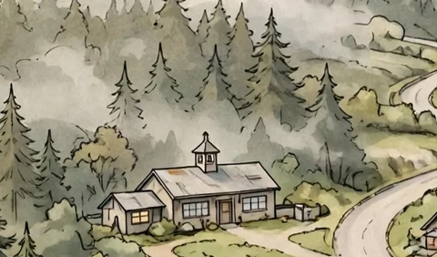
The little schoolhouse with the bell tower, up the hill where the road bends. One class, one teacher, and a new arts programme looking for allies.
You'll find: Clara Finch · the children of Wrenhaven · a noticeboard of ambitious plans.
Clara is asking around about old photographs of the town. For the children, she says.
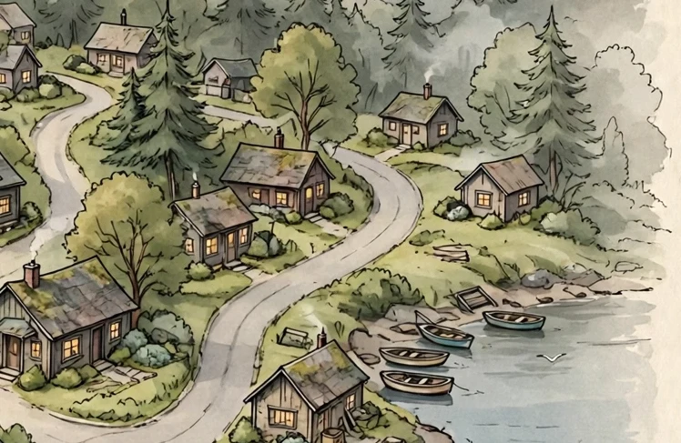
The lane curving east out of the harbour: small cottages, lit windows, woodsmoke. Yours is the rented house partway up — furnished, quiet, waiting. At the far end stands one more cottage, empty, its TO LET notice long faded, waiting for nobody in particular.
You'll find: your house · your neighbours · the empty cottage, minding its own business.
Home. Whatever that turns out to mean here.
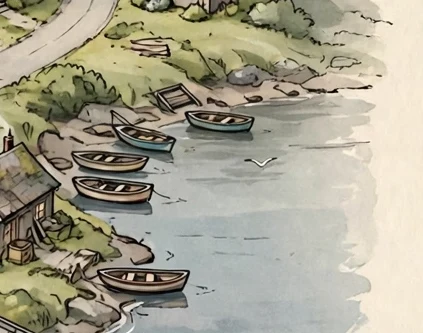
Rowboats pulled up on the shingle at the quiet end of town. A brass key was found here recently, unclaimed. The water is cold and the view is all inlet.
You'll find: Owen Shaw, some mornings · gulls · whoever walks out this far to think.
The found key is being kept at Mercer Marine Repairs, if it's yours.
Arthur Pike and ferry captain Mara Venn remain divided over the future of the western dock. Council will hear public submissions Tuesday evening. "We're not waiting for somebody to fall through it before we do something," Venn told the Weekly. Local mechanic June Mercer has expressed interest in acquiring the adjoining workshop, provided the matter can be resolved.
Daniel Venn has announced preliminary plans to reopen the pub's upstairs room for community music events. The room contains an old upright piano. Schoolteacher Clara Finch has expressed interest in helping organise an opening evening. Whether the piano works remains a matter of some debate.
Owen Shaw is collecting photographs documenting the town's history and welcomes contributions from residents. One recent submission has raised questions about the date and location of a community gathering. Shaw declined to elaborate.
Postmistress Ruth Calder is seeking volunteers to assist with the Harbour Hall archive restoration. Several documents have proved difficult to reconcile with existing town records. "Somebody ought to make sense of them before the mice do."
A former Wrenhaven resident has returned to the community after several years away. Friends and acquaintances are reportedly delighted to see them back.
The Weekly has received several enquiries concerning rumours circulating about residents returning to Wrenhaven after extended absences. We have no evidence of anything unusual occurring. People change. Memories fade. Small communities sometimes make more of things than they should. We would ask residents to exercise consideration before repeating stories about their neighbours.
The M.V. June Bell arrived shortly after eleven on Friday morning. A little rain. Some wind through the inlet. Among the passengers was a newcomer carrying a suitcase and a few personal belongings. Nobody in Wrenhaven knew him. He checked the address written on a folded piece of paper. Lantern Road. He had somewhere to stay. He had no idea what sort of place he'd arrived in. And Wrenhaven, for its part, had no idea what to make of him. Welcome to town.
Born here. Knows what everyone buys and what everyone owes. If you need anything in Wrenhaven, you start at her counter.
Owns the Second Chance. Stubborn, practical, and in a long dispute with the ferry over the western dock. Not a man who suffers advice gladly.
Captain of the M.V. June Bell. Dry-witted, exact, and protective of her crew. She brought you here.
Mara's brother. Sociable, funny, generous to a fault with credit. Dreams of music upstairs in the pub.
Quiet and observant. Keeps the town's old papers in labelled boxes and would like help making sense of them.
Runs Mercer Marine Repairs. Clever, impatient, ambitious — she wants the old dock workshop for her own.
Here for the season, photographing birds, boats, and ordinary things — and building a picture history of the town.
Warm, mischievous, formidable. Knows every family in town, though the dates wander a little in the telling.
Back after eight years away. Bright, direct, full of plans for the children's arts programme.
You are the newcomer. You have a suitcase, a folded piece of paper with an address on it, and a house waiting on Lantern Road. The key is at the general store, with Elsie.
First, give him a name. Your character is yours — name him, and tell the town where he's from as you meet people. What you say about him becomes true here.
To do anything, just say it in our chat, the way you'd say it at a table: "I head up to the general store and introduce myself to Elsie." Residents answer in character, out of their own lives — and they remember what you say. Promises count. So do accusations.
The town lives in weeks. Each new edition of the Weekly reports what actually happened — your doings, and everyone else's. Quiet weeks happen. Real towns have them.
Your first afternoon is waiting: the pier, the rain letting up, and a short walk to the general store, where a woman who has seen a thousand arrivals is watching you come up the road.
Wrenhaven · A living town, founded 2026 · The town continues.